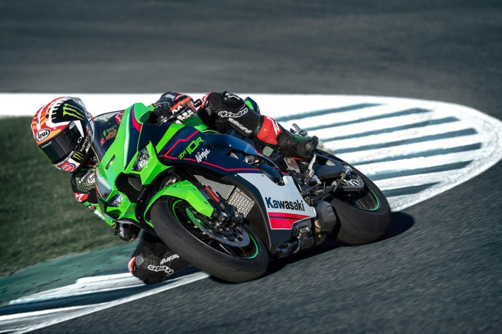
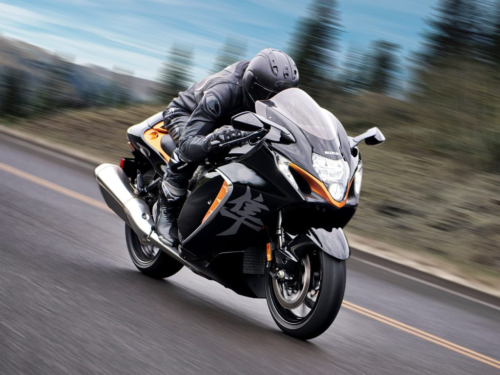
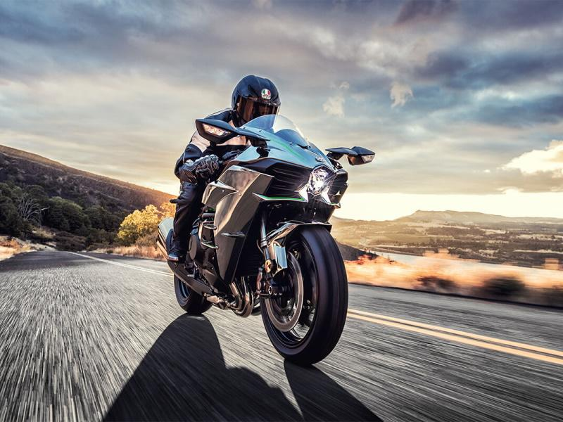

MOTOCYKLE SPORTOWE
Motocykl sportowy (ang. sportbike, sports bike) – klasa motocykli zoptymalizowana pod kątem prędkości, przyspieszenia i hamowania kosztem komfortu jazdy i ekonomii. Motocykle te charakteryzuje także niska masa własna w porównaniu z motocyklami innych klas. Wśród tego segmentu znajdują się motocykle popularnych marek: Honda, Kawasaki, Yamaha, Suzuki, jak i marek bardziej renomowanych takich jak Ducati, MV Agusta lub Bimota, czy najbardziej egzotycznych takich jak Münch lub MTT. Pozycja kierowcy jest mocno pochylona do przodu a zawieszenie bardzo twardo zestrojone. Motocykle tej klasy są zaliczane do najszybszych maszyn w całym przemyśle motocyklowym. Dla motocykli z kategorii supersport, pojemność skokowa silników to 1000 i więcej cm³. Drugi bardzo popularny segment to motocykle z silnikami o pojemności 600 cm³.


